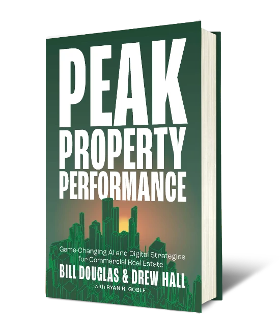

ASPIRIA
Overland Park, KS
Common pattern: owner-controlled connectivity and data & digital infrastructure repeated across a large mixed-use campus under one standard.
Data & digital infrastructure are no longer CRE background utilities. They determine who controls NOI, who owns operational and tenant data, and who shapes the future intelligence of commercial real estate assets.
The LLM model is the commodity. The moat is the layer above it. We build the layer.
For CRE owners, operators, and asset managers who want predictable NOI, resilient operations, satisfied tenants, and portfolios that get smarter over time.
The orchestration layer decides when, how, and under what rules any model gets to act on your buildings. That's what Property Brain™ is built for. That's how Property Intelligence becomes Portfolio Intelligence.
Most owners aren't flying blind — they're flying blurry.
You know value is being left on the table. You just can't see where, how much, or why. Every new "solution" adds cost, complexity, and another layer between you and your own building. That's not a tooling problem. That's a control problem.
Most owners did not give up control intentionally. It happened quietly — one tactical decision at a time.
Each decision felt tactical. Together, they shifted control away from the asset.
Repeatable standards across every property.
Governance baked in — segmentation, access rules, documentation.
Ongoing digital management that keeps performance high and operational risk low — without taxing on-site engineers or property managers.
Different skill set. Different lane. Same owner standard.
Every building OpticWise touches is measured against five standards. No exceptions.
One network identity, consistent across every property.
Segmented, governed, auditable.
Resilient by design — outages get isolated, not inherited.
Performance that matches tenant expectations today and tomorrow.
Human operations — not ticket roulette.
“Data isn't just an asset — it's the lifeblood of your operation.”Peak Property Performance® · Fast Company Press
Vendor- and LLM-agnostic. Owner-controlled by design.
Property Brain™ is a governed data plane + trust plane that makes each building capable of autonomous activities and intelligence.
Standardize it once, and Property Brain™ becomes Portfolio Brain™ — so intelligence compounds across buildings instead of restarting at every address.
One standard intelligence substrate → Many decision engines → Scaled across your portfolio.
One repeatable plan that turns fragmented, vendor-controlled building tech into an owner standard that scales.
Define success metrics, map ownership, identify leakage, document what's trustworthy and portable.
Establish secure, owner-controlled connectivity that repeats property-to-property.
Capture and normalize high-fidelity usable data into a consistent reusable model.
Govern identity, access, privacy, lineage, retention, and rules of use.
Enable any decision engine or LLM to act under owner permissions.
“Start with Clarify. Scale with control.”
“If you only look at NOI, you're looking at the result — not the cause.”
When you own the foundation, the asset itself changes.
Properties stop being one-offs. Data moves with the owner, not the vendor.
Swap vendors without losing history, intelligence, or operational continuity.
Swap decision engines without rewiring buildings.
Owner-controlled connectivity, fewer leaks, and revenue you couldn't see before.
Privacy, security, compliance, auditability — owned, not rented.
Consistent, measurable, 5S®-grade — property to property.
Grounded in governance, not theoretical.
Built on client-owned data & digital infrastructure. Not rented software.
We don't just optimize a building. We change what the asset is — then scale that advantage portfolio-wide.
Delay doesn't buy you optionality. It locks it up.
“Governance debt comes due with interest.”
Why most CRE owners don't control their most valuable asset — and the framework that changes everything.
No spam. Unsubscribe anytime.

Common pattern: owner-controlled connectivity and data & digital infrastructure repeated across a large mixed-use campus under one standard.
Common pattern: owner-standard data & digital infrastructure replacing fragmented vendor installs — one backplane, vendors plug in under rules.
Common pattern: governed connectivity and ongoing operations without taxing on-site engineers or property managers.
One building. 45 minutes. No software pitch. No rip-and-replace.